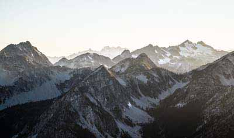

Weather You Like It or Not
You need to know the weather!
☰
Home
Franklin
Greenville
Springfield
StormCenter
Gallery
Gallery
Sunset on the Beach
Lakeside Sunset

Snowcapped Mountains in the Middle of Winter
Lakes Against the Mountains
Dunes in the Desert
Snowcovered Forest Road